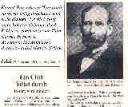
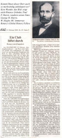
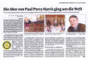
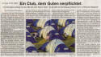
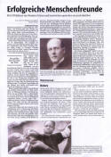

<html>

<head>
<meta http-equiv="Content-Language" content="en-us">
<LINK rel="shortcut icon" href="http://www.rotaryfirst100.org/images/favico.ico" type="image/x-icon">
<LINK rel="shortcut icon" href="http://www.rotaryfirst100.org/images/favico.ico" type="image/x-icon">
<meta http-equiv="Content-Type" content="text/html; charset=windows-1252">
<meta name="GENERATOR" content="Microsoft FrontPage 12.0">
<meta name="ProgId" content="FrontPage.Editor.Document">
<title>German Translation</title><META NAME="description" CONTENT="Rotary Global History from the birth of the founder of Rotary, Paul Harris, to present day. ROTARY GLOBAL HISTORY FELLOWSHIP (An Internet Project)  
RGHF with over 25,000 researched articles and books of the Global History of Rotary.">

<META NAME="keywords" CONTENT="Rotary Global History Fellowship , Membership covers the globe , historians , Rotarians , International Fellowship , public relations , rotary history , history , newsletter , rotary international , rotary engine , paul harris , rotary club , rotary club international , famous , foundation rotary , women , conventions , tolerance , rotary clubs , Africa , Australia , brisbane , melbourne , sydney  , New Zealand , South America , Europe , Ireland , england , germany , rotary , history  , paul harris , asia , china , japan , paris , tokyo , london , fellowship , meetings">
<style>
<!--
.almost_half_cell{max-width:400;width:49%}
.style94 {
	text-decoration: none;
	font-size: 10pt;
	font-family: Arial;
	color: Black;
	font-weight: bold;
}
.style103 {
	text-decoration: none;
	font-size: 10pt;
	font-family: Arial;
	color: Black;
	font-weight: bold;
	text-align: center;
}
.style105 {
	color: black;
	text-decoration: none;
	font-size: 10pt;
	font-family: Arial;
	font-weight: normal;
	margin-top: -1px;
	margin-bottom: -1px;
}
.style106 {
	margin-top: -1px;
	margin-bottom: -1px;
}
.style102 {
	margin-left: 4px;
	margin-right: 4px;
}
.style104 {
	border-width: 0px;
	margin-left: 4px;
	margin-right: 4px;
}
.style91{
	color: black;
	text-decoration: none;
	font-size: 10pt;
	font-family: Arial;
	font-weight: normal;
}
-->
</style>
<meta name="Microsoft Theme" content="none, default">
<meta name="Microsoft Border" content="none">
</head>

<body>


<center>
<!--webbot bot="Include" U-Include="../_include/top.htm" TAG="BODY" startspan -->

<div align="center">

<table border="0" width="900" height="116" cellpadding="0" cellspacing="0" id="table1">
  <tr>
    <td style="width: 753; height: 91;">
	<a title="RGHF Home" href="http://www.rotaryglobalhistoryfellowship.org">
	</a></td>
  </tr>
  </table>
  <table border="0" width="900" cellpadding="3" id="table2">
    
    <!-- AddThis Button BEGIN -->
<div class="addthis_toolbox addthis_floating_style addthis_32x32_style" style="right:50px;top:50px;">
<a class="addthis_button_preferred_1"></a>
<a class="addthis_button_preferred_2"></a>
<a class="addthis_button_preferred_3"></a>
<a class="addthis_button_preferred_4"></a>
<a class="addthis_button_compact"></a>
</div>
<script type="text/javascript">var addthis_config = {"data_track_addressbar":true};</script>
<script type="text/javascript" src="http://s7.addthis.com/js/300/addthis_widget.js#pubid=ra-52e676066f8f7d83"></script>
<!-- AddThis Button END -->


  <tr>
    <td width="0" style="width: 120; height: 5px;" class="style8">
	<a style="text-decoration: none" href="http://www.rotaryglobalhistoryfellowship.org"><font face="Arial" size="1" color="red">HOME</font></a></td>
    <td width="0" style="width: 120; height: 5px;" class="style7">
  
	<a href="http://www.regionalhistory.org/" style="text-decoration: none">
<b><font face="Arial" size="1" color="black">GLOBAL</font></b></span></a></font></span></td>
    <td width="0" style="width: 120; height: 5px;" class="style8">
      <a href="http://www.districthistory.org" style="text-decoration: none">
 	  <font face="Arial" size="1" color="black">DISTRICTS</font></a></td>
    <td width="0" style="width: 120; height: 5px;" class="style8">
	<a href="http://www.clubhistory.org" style="text-decoration: none">
	<font face="Arial" size="1" color="black">CLUBS</font></a></td>
    <td width="0" style="width: 167; height: 5px;" class="style8">
 

	<a href="http://www.missinghistory.org" style="text-decoration: none">
	<font face="Arial" size="1" color="black">MISSING HISTORIES</font></a></td>
    <td width="0" style="width: 120; height: 5px;" class="style8">
	<a href="http://www.whatpaulharriswrote.org" style="text-decoration: none">
	<font face="Arial" size="1" color="black">PAUL HARRIS</font></a></td>
    <td width="0" style="width: 120; height: 5px;" class="style8">


	<strong>
  
	<a href="http://www.peacehistory.org"style="text-decoration: none"><font face="Arial" size="1" color="black">
	PEACE</span></a></td>
            
  <tr>
    <td width="0" style="width: 120; " class="style8">
	<a href="http://www.presidentshistories.org" style="text-decoration: none">
	<font face="Arial" size="1" color="black">PRESIDENTS</font></a></td>
    <td width="0" style="width: 120; " class="style8">
  
	<a href="http://www.conventionhistory.org" style="text-decoration: none">
	<font face="Arial" size="1" color="black">CONVENTIONS</font></a></td>
    <td width="0" style="width: 120; " class="style8">
  
	<a href="http://www.historylibrary.org" style="text-decoration: none">
	<font face="Arial" size="1" color="black"><strong>POST YOUR HISTORY</strong></font></a></td>
    <td width="0" style="width: 120; " class="style8">
  
	<a class="style3" href="http://www.jeanharris.org" style="text-decoration: none">
	<font face="Arial" size="1" color="black">WOMEN</span></a></td>
    <td width="0" style="width: 167; " class="style8">
 

	<a href="http://www.foundationhistory.org" style="text-decoration: none">
	<font face="Arial" size="1" color="black">FOUNDATION</font></a></td>
    <td width="0" style="width: 120; " class="style8">
	<a href="http://www.historycomment.org" style="text-decoration: none">
	<font face="Arial" size="1" color="black">COMMENTS</font></a></td>
    <td width="0" style="width: 120; " class="style7">


	<a href="http://www.historyphilosophy.org" style="text-decoration: none">
	<font face="Arial" size="1" color="black"><strong>PHILOSOPHY</strong></font></a></td>
            
  <tr>
    <td width="0" style="width: 120; height: 5px;" class="style8">
  
 	<a href="http://www.historysearch.org" style="text-decoration: none">
	<font face="Arial" size="1" color="black">SEARCH</font></a></td>
    <td width="0" style="width: 120; height: 5px;" class="style8">
  

	<font face="Arial" color="black">
	<strong>
	<a style="text-decoration: none" target="_blank" href="http://www.historyfeatures.org">
	<font face="Arial" size="1" color="black">SUBSCRIPTIONS</font></a></td>
    <td width="0" style="width: 120; height: 5px;" class="style8">
  
 	<strong>
	<font face="Arial" color="black">
	<a href="http://www.historyfan.org" style="text-decoration: none" target="_blank">
	<font face="Arial" size="1" color="black">FACEBOOK</font></a></td>
    <td width="0" style="width: 120; height: 5px;" class="style8">
  
 	<strong><a href="http://www.joinrghf.org" style="text-decoration: none">
	<font face="Arial" size="1" color="black">JOIN RGHF</span></font></a></td>
    <td width="0" style="width: 167; height: 5px;" class="style8">
 

  	<a style="text-decoration: none" href="http://www.historyfellowship.org/explore.php">
	<font face="Arial" size="1" color="black">EXPLORE RGHF</font></a></td>
    <td width="0" style="width: 120; height: 5px;" class="style8">
  
 	<a style="text-decoration: none" href="http://www.historyfellowship.org/viewpage.php?page_id=11">
	<font face="Arial" size="1" color="black">RGHF QUIZ</font></a></td>
    <td width="0" style="width: 120; height: 5px;" class="style7">


      <font face="Arial" color="black">
	  <a style="text-decoration: none" href="http://www.historyfellowship.org/viewpage.php?page_id=2">
	  <font face="Arial" size="1" color="black">RGHF MISSION</span></font></a></td>
        

  	
    
  
  <tr><center>
		</div>
				
  	<!--webbot bot="Include" i-checksum="3449" endspan --><table border="0"  height="1" style="border-collapse: collapse" cellpadding="0" cellspacing="0">
  </center>
  <tr>
    <td  align="center" height="1"><table height="1" cellSpacing="1" cellPadding="3"  bgColor="#ffcc66" border="0" width="765" align="left">
      <tr>
        <td vAlign="top" align="left" width="0" bgColor="#ffffff" colSpan="3" height="1">
        <blockquote>
			<center><p style="margin-top: -1px; margin-bottom: -1px" align="center">
          <style="font-size: 9pt">
          <font size="2">
          </font></p>
			<p style="margin-top: -1px; margin-bottom: -1px" align="center">
          <style="font-size: 9pt">
          	</p>
			<p style="margin-left:0in; margin-right:0in; margin-top:0in; margin-bottom:0pt">
					<u>
					<b><font face="Georgia" size="4">Seiten auf Deutsch</font></b></u></p>
			<p style="margin-left:0in; margin-right:0in; margin-top:0in; margin-bottom:0pt">
					<b><font face="Georgia" size="4">&nbsp;&nbsp; </font>
					<font face="Georgia">
					<a href="districts/districts/1800d.htm">Distrikt 1800</a></font></b></p>
			<p style="margin-left:0in; margin-right:0in; margin-top:0in; margin-bottom:0pt">
					<font face="Georgia"><b>&nbsp;&nbsp;
					<a href="districts/districts/1820d.htm">Distrikt 1820</a></b></font></p>
			<p style="margin-left:0in; margin-right:0in; margin-top:0in; margin-bottom:0pt">
					<b><font face="Georgia">&nbsp;&nbsp;&nbsp; 
					<a href="districts/districts/1880.htm">Distrikt 1880</a><br>
					<a href="clubs/clubs-with-conventions/lucerne/deutsch.htm" target="_blank">
					Rotary Luzern, Schweiz</a></font></b></p>
			<p style="margin-left:0in; margin-right:0in; margin-top:0in; margin-bottom:0pt">
					<font face="Georgia">&nbsp;&nbsp;&nbsp; </font>
					<span style="COLOR: #800000; FONT-FAMILY: Arial">
					<font face="Georgia"><b>
					
					<a href="presidents/themes/german.htm">Jahresthemen</a></a></b></font></span></p>
			<p style="margin-left:0in; margin-right:0in; margin-top:0in; margin-bottom:0pt">
					<b><font face="Georgia">&nbsp;&nbsp;&nbsp;
					<a href="http://www.rotaryhistoryfellowship.org/rghf/images/rghfhistory2007de.pdf">
					„Eine virtuelle Gemeinschaft“</a></font></b></p>
			<p style="margin-left:0in; margin-right:0in; margin-top:0in; margin-bottom:0pt">
					<b><font face="Georgia">&nbsp;&nbsp;&nbsp; </font></b>
					<strong>
					<a href="http://www.rotaryfirst100.org/geschichtevonrotary/history/onepage/index.htm">
					&quot;Geschichte von Rotary&quot;</a></strong><p style="margin-left:0in; margin-right:0in; margin-top:0in; margin-bottom:0pt">
					<b><a href="presidents/themes/index.htm">Präsident Themen 
					in Deutsch</a></b><p style="margin-left:0in; margin-right:0in; margin-top:0in; margin-bottom:0pt">
					<b>
					<a href="http://www.rotaryhistoryfellowship.org/rghf/images/rghfhistory2007de.pdf">
					RGHF Geschichte in Deutsch</a></b> (pdf)<br>
					<p style="margin-left:0in; margin-right:0in; margin-top:0in; margin-bottom:0pt">
					<br>
			<p style="margin-left:0in; margin-right:0in; margin-top:0in; margin-bottom:0pt">
					&nbsp;</p>
			<b>
			<center><center>
			<center>
					<p style="margin-left:0in; margin-right:0in; margin-top:0in; margin-bottom:0pt" align="left">
					<font face="Georgia" size="4" color="#800000">
					TRANSLATIONS </font>
					<font face="Georgia" size="2" color="#800000">
					<a href="http://www.historytranslation.org">
					www.historytranslation.org</a></font><font face="Georgia" size="4" color="#800000">
					</font><font face="Georgia" size="2">
					(and every page of RGHF can be translated, using the Google 
					Tool above. Once you translate this page, every page there 
					after will be translated)</font></p>
					<style="font-size: 9pt">
	<table border="0" cellpadding="0" style="border-collapse: collapse; width: 751px;" id="table2">
		<tr>
    <td  width="900" style="height: 12px" class="style94">
					&nbsp;</td>
  	  </tr>
		<tr>
    <td  width="900" style="height: 12px" class="style103">
					&nbsp;</td>
  	  </tr>
		<tr>
			<td width="0">
			<table bgColor="white" border="0" style="width: 845px">
				<tr>
					<td class="style94" width="900"><center>
					<p class="style105"><strong>A sample of some translated 
					pages.</strong></p>
					</center><center>
					<p class="style106" style="width: 802px">
					<a class="style94" href="/first100/chinese/index.htm">
					</a><a class="style94" href="/first100/histoiredurotary/index.htm"></a><a class="style94" href="/first100/geschichtevonrotary/index.htm"></a><a class="style94" href="global/countries/italy/italiana.htm"></a><a class="style94" href="/first100/albanian/index.htm"></a><a class="style94" href="global/countries/norway/norsk.htm"></a><a href="global/countries/poland/polskim.htm"></a><a href="global/regions/portugal.htm"></a><a class="style94" href="http://www.archivohistoricoderotary.org/"></a><a class="style94" href="global/countries/sweden/100years.htm"></a><a class="style94" href="global/countries/thailand/indexTh.htm"></a><a href="history/history/Turkish.htm"></a></p>
					</center></td>
				</tr>
				<tr>
					<td class="style103" width="900"><span class="style91">
					<strong>All of our 4,000 English pages can be partially 
					translated, into over 30 languages, using our Google Tool.</strong></span></td>
				</tr>
			</table>
			</td>
		</tr>
	</table>
	      </blockquote>
        </font></td>
      </tr>
		<tr>
        <td vAlign="top" align="left" width="151" bgColor="#ffffff" height="248">
		<table cellSpacing="1" cellPadding="4" width="151" bgColor="#000000" border="0" id="table29">
          <tr align="left" bgColor="#f7f7f7">
            <td width="141" bgColor="#000080">
			<p align="center"><b><a href="geschichtevonrotary/magazin/index.htm">
			<font color="#FFFF00" size="2"><span style="text-decoration: none">
			German Rotary Magazin</span></font></a></b></td>
          </tr>
          <tr align="left" bgColor="#f7f7f7">
            <td width="141" bgColor="#000080">
            <p align="center"><span lang="de"><font color="#ffff00" size="2"><b>
            <a style="text-decoration: none" href="http://www.rotaryfirst100.org/history/history/index.htm">
            <font color="#ffff00">Geschichtlicher berblick</font></a></b></font></span></td>
          </tr>
          <tr align="left" bgColor="#f7f7f7">
            <td width="141" bgColor="#000080">
			<p align="center"><b><a href="geschichtevonrotary/images/centennial_georgeharris.pdf">
			<span style="text-decoration: none"><font color="#ffff00" size="2">
			Rotary Wird 100</font></span></a></b></td>
          </tr>
          <tr align="left" bgColor="#f7f7f7">
            <td width="141" bgColor="#000080">
            <p align="center"><span lang="de"><b>
            <a style="text-decoration: none" href="http://www.rotaryfirst100.org/history/headings/tenets.htm">
            <font face="Arial" color="#ffff00" size="2">Themen, Mottos und 
			Symbole</font></a></b></span></td>
          </tr>
          <tr>
            <td width="141" bgColor="#000080">
            <p align="center"><span lang="de" style="font-weight: 700">
            <font face="Arial" color="#ffff00" size="2">
            <a style="text-decoration: none" href="http://www.rotaryfirst100.org/secretariat">
            <font color="#ffff00">R.I. Sekretariat</font></a></font></span></td>
          </tr>
          <tr>
            <td style="font-weight: bold; font-size: 10pt" width="141" bgColor="#000080">
            <p align="center"><span lang="de"><font color="#ffff00">
            <span style="font-family: Arial">
            <a style="text-decoration: none" href="http://www.rotaryfirst100.org/history/headings/tools.htm">
            <font color="#ffff00" size="2">Wo finde ich?</font></a></span></font></span></td>
          </tr>
          <tr>
            <td align="middle" width="141" bgColor="#000080">
            <span lang="de" style="font-weight: 700">
            <a style="text-decoration: none" href="http://www.rotaryfirst100.org/leaders">
            <font face="Arial" color="#ffff00" size="2">Die ersten bedeutenden 
			Rotarier</font></a></span></td>
          </tr>
          <tr>
            <td align="middle" width="141" bgColor="#000080"><span lang="de">
            <font color="#ffff00" size="2"><b><span style="font-family: Arial">
            <a style="text-decoration: none" href="http://www.rotaryfirst100.org/history/headings/evolution.htm">
            <font color="#ffff00">Vom Business zum Service Klub</font></a></span></b></font></span></td>
          </tr>
          <tr>
            <td align="middle" width="141" bgColor="#000080"><span lang="de">
            <font color="#ffff00" size="2"><b>
            <a style="text-decoration: none" href="http://www.rotaryfirst100.org/philosophy/philosophy.htm">
            <font color="#ffff00">Der rotarische Gedanke</font></a></b></font></span><font color="#ffff00" size="2"><b><a style="text-decoration: none" href="http://www.rotaryfirst100.org/" ><font color="#ffff00">
            </font></a></b></font></td>
          </tr>
          <tr>
            <td align="middle" width="141" bgColor="#000080"><span lang="de">
            <font color="#ffff00" size="2"><b><span style="font-family: Arial">
            <a style="text-decoration: none" href="http://www.rotaryfirst100.org/history/headings/project.htm">
            <font color="#ffff00">Zur Entstehung des Projekts &quot;Die Geschichte 
			Rotary's&quot;</font></a></span></b></font></span></td>
          </tr>
          <tr>
            <td align="middle" width="141" bgColor="#000080"><span lang="de">
            <font color="#ffff00" size="2"><b><span style="font-family: Arial">
            <a style="text-decoration: none" href="http://www.rotaryfirst100.org/history/headings/world.htm">
            <font color="#ffff00">Papst Johannes Paul II</font></a></span></b></font></span></td>
          </tr>
          <tr>
            <td style="font-weight: bold; font-size: 10pt" align="middle" width="141" bgColor="#000080">
            <span lang="de">
            <a style="text-decoration: none" href="http://www.rotaryfirst100.org/history/famous">
            <font face="Arial" color="#ffff00" size="2">Ber&#344;hmte Rotarier</font></a></span></td>
          </tr>
          <tr>
            <td align="middle" width="141" bgColor="#000080">
            <p class="MsoPlainText" style="margin-top: -1px; margin-bottom: -1px">
            <span lang="de"><font color="#ffff00" size="2"><b>
            <span style="font-family: Arial">
            <a style="text-decoration: none" href="http://www.rotaryfirst100.org/history/headings/world.htm">
            <font color="#ffff00">Was die Welt &#344;ber Rotary denkt</font></a></span></b></font></span></td>
          </tr>
          <tr>
            <td style="font-weight: bold; font-size: 10pt" align="middle" width="141" bgColor="#000080">
            <span lang="de">
            <a style="text-decoration: none" href="http://www.rotaryfirst100.org/history/history/otherorganizations">
            <font face="Arial" color="#ffff00" size="2">Andere Klubs</font></a></span></td>
          </tr>
          <tr>
            <td style="font-weight: bold; font-size: 10pt" align="middle" width="141" bgColor="#000080">
			<b><span lang="DE"><font size="2" color="#FFFF00">
			<a href="http://www.kofc12720.org">
			<span style="text-decoration: none"><font color="#FFFF00">
			Columbusritter</font></span></a></font></span></b></td>
          </tr>
          <tr>
            <td style="font-weight: bold; font-size: 10pt" align="middle" width="141" bgColor="#000080">
			<b><a href="geschichtevonrotary/otherorgs/index.htm" style="text-decoration: none">
			<font color="#FFFF00">Traditionelle Service Clubs</font></a></b></td>
          </tr>
          <tr>
            <td width="141" bgColor="#f7f7f7" height="24">
            <p style="margin-top: -1px; margin-bottom: -1px">
            <style="font-size: 9pt">
            <a href="http://www.whatpaulharriswrote.org/books" >
            <font size="2">
            </font></a></p>
            <p style="margin-top: -1px; margin-bottom: -1px">
            <span lang="de">
            <a style="text-decoration: none" href="http://www.whatpaulharriswrote.org/books">
            <font size="2">B&#344;cher und Schriften von Paul Harris</font></a></span></font></font></td>
          </tr>
          <tr>
            <td width="141" bgColor="#f7f7f7" height="37">
            <p style="margin-top: -1px; margin-bottom: -1px">
            <style="font-size: 9pt">
            <font size="2">
            <a target="_top" href="history/headings/awards.htm">
            </a></font></p>
            <p style="margin-top: -1px; margin-bottom: -1px">
            <span lang="de">
            <font size="2">Das Projekt wird ausgezeichnet</font></span></font></font></td>
          </tr>
          <tr>
            <td width="141" bgColor="#f7f7f7" height="64">
            <p align="center">
            <style="font-size: 9pt"><span lang="de"><b>
            <a style="text-decoration: none" href="http://www.rotaryfirst100.org/history/headings/translation.htm">
            <font size="2">&quot;Die Geschichte Rotary's</font></a><font size="2">&quot; 
			(Nicht-Englische Sprachen)</font></b></span></font></font></td>
          </tr>
          <tr>
            <td width="141" bgColor="#f7f7f7" height="19">
            <p align="center">
            <style="font-size: 9pt"><span lang="de"><b><font color="#0000ff">
            <a style="text-decoration: none" href="http://www.rotaryfirst100.org/districts">
            <font size="2">Die Geschichte der</font></a></font><font size="2">
            <a style="text-decoration: none" href="http://www.rotaryfirst100.org/districts">
            <font color="#0000ff">Clubs und Distrikt</font></a><style="font-size: 9pt" color="#0000ff">e</font></b></span></font></font></font></font></td>
          </tr>
          <tr>
            <td width="141" bgColor="#f7f7f7" height="9">
            <p align="center"><span lang="de"><font color="#0000ff" size="2"><b>
            <a href="http://www.rotaryfirst100.org/geschichtevonrotary/history/earlyclubs/index.htm">
            <span style="text-decoration: none">Early Clubs of Deutschland</span></a></b></font></span></td>
          </tr>
          <tr>
            <td width="141" bgColor="#f7f7f7" height="9"><span lang="DE">
			<font size="2"><a href="geschichtevonrotary/100.htm">
			<span style="text-decoration: none; font-weight: 700">Leserbrief zum 
			Artikel „Ein Club, dem Guten verpflichtet“, von Marianne Heuwagen in 
			der Süddeutschen Zeitung vom 23. Februar 2005</span></a></font></span></td>
          </tr>
        </table></td>
        <td vAlign="top" align="middle" width="417" bgColor="#ffffff" height="248">
		<table cellSpacing="0" cellPadding="4" width="550" border="0" style="border-collapse: collapse" height="1126" id="table30">
          <tr bgColor="#ffffff">
            <td width="542" height="727">
            <p class="MsoPlainText" style="margin-top: -1px; margin-bottom: -1px">
            <style="font-size: 9pt"><span style="font-family: Arial" lang="de">
			<font size="2">Paul Harris und sein Lebenswerk sind das zentrale 
			Thema des Projekts <b>
            &quot;Die Geschichte Rotary's&quot; </b>(&quot;Rotary Global History&quot;). 
			Das Projekt ist ein Versuch, nicht nur die trockenen Fakten der 
			rotarischen Geschichte darzustellen, sondern auch etwas &#344;ber den 
			Geist, der die Entstehung Rotary's erm÷glichte und das Fortbestehen 
			Rotary's sichert, auszusagen. Die Br&#344;cke zur Gegenwart wird durch 
			zeitnahe Berichte &#344;ber Ereignisse&nbsp; in den heutigen Klubs in 
			allen L&#324;ndern geschlagen.&nbsp;&nbsp;&nbsp;&nbsp;&nbsp;&nbsp;&nbsp;&nbsp; 
			</font> </span></p>
            <p class="MsoPlainText" style="margin-top: -1px; margin-bottom: -1px">
            &nbsp;</p>
            <p class="MsoPlainText" style="margin-top: -1px; margin-bottom: -1px">
            <span style="font-family: Arial" lang="de"><font size="2">Auf den 
			Internetseiten der Geschichte Rotary's finden Sie Informationen zu 
			einer Vielzahl unterschiedlicher Themen, beispielsweise einen <b>
            &quot;Geschichtlichen berblick&quot;</b>,<b> </b>die <b>&quot;Themen, Mottos und 
			Symbole&quot;</b> Rotary's und eine Beschreibung des <b>&quot;Sekretariats von 
			Rotary International&quot;. </b>
            &nbsp;M÷glichkeiten, schnell an eine gew&#344;nschte Stelle zu gelangen, zeigt 
			Ihnen<b> &quot;Wo finde ich ...&quot;</b>. Die &quot;<b>ersten bedeutenden 
			Rotarier&quot;</b> werden auf diesen Seiten ebenso beschrieben wie die 
			Entwicklung Rotary's vom <b>&quot;Business zum Service Klub&quot;</b>. <b>&quot;Der 
			rotarische Gedanke&quot;</b>&nbsp; manifestierte sich bereits 1914 auf 
			dem Weltkongress in Houston in Form einer Philosophie, deren weitere 
			Entwicklung&nbsp; hier aufgezeigt wird. Unter dem Stichwort <b>&quot;Zur 
			Entstehung des Projekts&quot;</b>&nbsp; verbergen sich nicht nur 
			grundlegende Informationen zu dessen Entstehung, sondern auch eine 
			Beschreibung der Menschen und ihrer Vorstellungen, die an diesem 
			Projekt mitarbeiten.</font></span></p>
            <p class="MsoPlainText" style="margin-top: -1px; margin-bottom: -1px">
            &nbsp;</p>
            <p class="MsoPlainText" style="margin-top: -1px; margin-bottom: -1px">
            <span style="font-family: Arial" lang="de">
            <font size="2">Weitere Stichworte und Themen sind unter&nbsp; 
			&quot;Mitgliedschaft&quot; (zur Zeit Baustelle), &quot;Auszeichnungen von Rotary 
			International&quot; (zur Zeit Baustelle),&nbsp; <b>&quot;Ber&#344;hmte Rotarier&quot;</b>, <b>
			&quot;Was die Welt</b> <b>
            &#344;ber Rotary denkt&quot; </b>zu<b> </b>finden, sowie eine Beschreibung 
			anderer Serviceklubs<b> </b>unter <b>&quot;Verwandte Organisationen&quot;</b>.</font></span></p>
            <p class="MsoPlainText" style="margin-top: -1px; margin-bottom: -1px">
            &nbsp;</p>
            <p class="MsoPlainText" style="margin-top: -1px; margin-bottom: -1px">
            <span lang="de" style="font-family: Arial">
            <font size="2">Ausgehend von der ersten Seite des Projekts, <b>&quot;Die 
			Geschichte</b>
            <b>Rotary's&quot;</b>, k÷nnen Sie nahezu alles einsehen, was sich bei 
			Rotary International seit <b>&quot;1868&quot; </b>ereignet hat, dem Jahr, in 
			dem Paul Harris geboren wurde. </font> </span>
			</p>
            <p class="MsoPlainText" style="margin-top: -1px; margin-bottom: -1px">
            &nbsp;</p>
            <p class="MsoPlainText" style="margin-top: -1px; margin-bottom: -1px">
            <span style="font-family: Arial" lang="de"><font size="2">An den 
			R&#324;ndern dieser Seite stehen die wesentlichen Kurzbezeichnungen der 
			zugeh÷rigen Internetseiten. Am oberen Rand aller Seiten finden Sie 
			Links zu anderen Internetseiten dieses Projekts und am unteren Rand 
			einige zus&#324;tzliche Informationen. Insgesamt umfasst &quot;Die Geschichte 
			Rotary's&quot; zur Zeit &#344;ber 1100 Internetseiten. Manche der Links sind 
			im Moment noch Baustelle. Es wird wohl einige Zeit vergehen, bis die 
			abschlie enden Zeilen des Projekts &quot;Die Geschichte Rotary's!&quot; 
			geschrieben werden. </font> </span>
			</p>
            <p class="MsoPlainText" style="margin-top: -1px; margin-bottom: -1px">
            &nbsp;</p>
            <p class="MsoPlainText" style="margin-top: -1px; margin-bottom: -1px">
            <span style="font-family: Arial" lang="de"><font size="2">Auf dem 
			wenigen Platz, der auf dieser Seite zur Verf&#344;gung steht, kann nicht 
			im Detail aufgezeigt werden, was sich hinter all den einzelnen 
			Stichworten verbirgt.&nbsp;&nbsp; Klicken Sie einfach auf ein Link 
			und gehen Sie auf Entdeckungsreise. Um auf diese anf&#324;ngliche Seite 
			zur&#344;ckzukehren, klicken Sie einfach auf das &quot;History Home&quot; Link, das 
			in der Kopfzeile fast jeder Seite zu finden ist. Sie kommen dann 
			sofort auf diese Seite zur&#344;ck und k÷nnen von hier aus eine neue 
			Reise durch &quot;Die Geschichte Rotary's&quot; antreten.</font></span></p>
            <p class="MsoPlainText" style="margin-top: -1px; margin-bottom: -1px">
            &nbsp;</p>
            <p class="MsoPlainText" style="margin-top: -1px; margin-bottom: -1px">
            <span style="font-family: Arial">
            <font color="#0000ff" size="2"><a href="http://www.rotaryfirst100.org/historians/pastcommittee/rudman.htm">
			Doug Rudman</a></font></span></p>
            <p class="MsoPlainText" style="margin-top: -1px; margin-bottom: -1px">
            &nbsp;</p>
            <p class="MsoPlainText" style="margin-top: -1px; margin-bottom: -1px">
            <font color="#0000ff" size="2"><b>
            <a href="historians/ziegler.htm">(Translation by Dr. 
			</a>
			<a href="http://www.rotaryfirst100.org/historians/ziegler.htm">
			Wolfgang Ziegler)</a></b></font></p>
			</font></td>
          </tr>
          <tr bgColor="#ffffff">
            <td width="542" bgColor="#f7f7f7" height="56"><style="font-size: 9pt">
            <span lang="de"><font size="2">&quot;Die Welt ver&#324;ndert sich und wir 
			m&#344;ssen uns mit ihr ver&#324;ndern. Auch Rotary wird sich immer wieder den 
			Herausforderungen einer sich &#324;ndernden Welt stellen m&#344;ssen&quot; </font> <b>
			<font size="2">~ Seite 253, &quot;</font></b></span><font face="Arial" size="2"><b><a style="text-decoration: none" href="http://www.whatpaulharriswrote.org/library/rotarianage/rotarianage.htm#253changing-world"  <a>This 
			Rotarian Age</a></b></font><span lang="de"><b><font size="2">&quot;</font></b><font size="2">, 
			Paul Harris, 1935</font></span><font face="Arial" size="2"> ~-
            </font></font></font></td>
          </tr>
          <tr bgColor="#ffffff">
            <td width="542" bgColor="#f7f7f7">&nbsp;</td>
          </tr>
        </table></td>
        <td vAlign="top" width="155" bgColor="#ffffff" height="248">
		<table height="246" cellSpacing="1" cellPadding="4" width="141" bgColor="#000000" border="0" id="table31">
          <tr>
            <td width="140" bgColor="#f7f7f7" height="22"><b><font size="2">
			<a href="historians/ziegler.htm">
			</a></font></b><p>
			<b><font size="2">Rotary wird 100, from <a href="historians/ziegler.htm">
			Wolfgang Ziegler</a></font></b></font></font></td>
          </tr>
          <tr>
            <td width="140" bgColor="#f7f7f7" height="22"><a href="geschichtevonrotary/images/centennial_georgeharris.pdf">
			</a><p>&nbsp;</p>
			<p>&nbsp;</p>
			<p>&nbsp;</p>
			<p style="margin-top: -1px; margin-bottom: -1px">&nbsp;</td>
          </tr>
          <tr>
            <td width="140" bgColor="#f7f7f7" height="22">
			<a href="geschichtevonrotary/images/centennial/AugsburgerAllgemeineZeitung.jpg">
			</a></td>
          </tr>
          <tr>
            <td width="140" bgColor="#f7f7f7" height="22">
			<a href="geschichtevonrotary/images/centennial/germanarticle.jpg">
			</a></td>
          </tr>
          <tr>
            <td width="140" bgColor="#f7f7f7" height="22">
			<a href="geschichtevonrotary/images/centennial/SuddeutscheZeitung.jpg">
			</a></td>
          </tr>
          <tr>
            <td width="140" bgColor="#f7f7f7" height="22">
			<a href="geschichtevonrotary/images/centennial/german2.jpg">
			</a></td>
          </tr>
          </table></td>
      </tr>
      <tr>
        <td vAlign="top" align="left" width="0" bgColor="#ffffff" colSpan="3" height="1">
          <b><font face="Arial">
			<!--webbot bot="Include" 
 U-Include="../_include/germany.htm" TAG="BODY" startspan --><center>
<table border="0" cellpadding="0" width="900" id="table1" 
 height="2" cellspacing="0"></center>
	<tr>
		<td width="0" align="center" 
  style="font-family: Arial Black; font-size: 8pt">
		<font face="Arial" size="1" color="#FFFFFF">
		<a href="global/regions/index.htm" style="text-decoration: none">
		<span class="ms-separator">ROTARY GLOBAL HISTORY</span></a></font></td>
		<td width="0" align="center" 
  style="font-family: Arial Black; font-size: 8pt">
		<font color="#FFFF00">
		<span style="text-decoration: none; ">
		<a href="/first100/geschichtevonrotary/index.htm" style="text-decoration: none">
		<font face="Arial" size="1"><span class="ms-separator">SECTION HOME</span></font></a></span></font></td>
		<td width="0" align="center" 
  style="font-family: Arial Black; font-size: 8pt" colspan="2">
		<font size="1" face="Arial">Geschichte von Rotary</font></td>
		<td width="0" align="center" 
  style="font-family: Arial Black; font-size: 8pt" colspan="2">
		<a style="text-decoration: none" href="global/outline/index.htm">
		<font face="Arial" size="1"><span class="ms-separator">HISTORY OUTLINE</span></font></a></td>
		<td width="0" align="center" 
  style="font-family: Arial Black; font-size: 8pt" colspan="2">
		<a style="text-decoration: none" href="history/headings/translation.htm">
		<font face="Arial" size="1"><span class="ms-separator">TRANSLATIONS</span></font></a></td>
		<td width="0" align="center" 
  style="font-family: Arial Black; font-size: 8pt">
		<a href="http://www.historycalendar.org" style="text-decoration: none">
		<font size="1" face="Arial"><span class="ms-separator">HISTORY CALENDAR</span></font></a></td>
	</tr>
	<tr>
		<td width="0" align="left" 
  style="font-family: Arial; font-size: 10pt; font-weight:bold">
		<font color="#FFFF00">
		<a href="geschichtevonrotary/history/earlyclubs/index.htm" style="text-decoration: none">
		<span style="font-weight:400" class="ms-separator">
		<font size="1">EARLY CLUBS</font></span></a></font></td>
		<td width="0" align="left" 
  style="font-family: Arial; font-size: 10pt; font-weight:bold">
		<font color="#FFFF00">
		<a href="geschichtevonrotary/history/onepage/index.htm" style="text-decoration: none">
		<span style="font-weight:400" class="ms-separator">
		<font size="1">ONE PAGE</font></span></a></font></td>
		<td width="0" align="left" 
  style="font-family: Arial; font-size: 10pt; font-weight:bold">
		<font color="#FFFF00">
		<a href="geschichtevonrotary/100.htm" style="text-decoration: none">
		<span style="font-weight:400" class="ms-separator">
		<font size="1">CENTENNIAL</font></span></a></font></td>
		<td width="0" align="left" 
  style="font-family: Arial; font-size: 10pt; font-weight:bold" colspan="2">
		<font color="#FFFF00">
		<a href="geschichtevonrotary/kofc.htm" style="text-decoration: none">
		<span style="font-weight:400" class="ms-separator">
		<font size="1">KNIGHTS</font></span></a></font></td>
		<td width="0" align="left" 
  style="font-family: Arial; font-size: 10pt; font-weight:bold" colspan="3">
		<font color="#FFFF00">
		<a href="geschichtevonrotary/magazin/index.htm" style="text-decoration: none">
		<span style="font-weight:400" class="ms-separator">
		<font size="1">ROTARY MAGAZIN</font></span></a></font></td>
		<td width="0" align="left" 
  style="font-family: Arial; font-size: 10pt; font-weight:bold">
		<span style="font-weight: 400">
		<a href="geschichtevonrotary/otherorgs/index.htm" style="text-decoration: none">
		<font size="1"><span class="ms-separator">OTHER ORGS</span></font></a></span></td>
	</tr>
	<tr>
		<td width="0" align="left" 
  style="font-family: Arial Black; font-size: 8pt" colspan="3">
		<font face="Arial" color="#FFFF00">
		<span style="text-decoration: none">
		<a href="historians/ziegler.htm" style="text-decoration: none">
		<font size="1"><span class="ms-separator">SECTION CHAIR, WOLFGANG ZIEGLER</span></font></a></span></font></td>
		<td width="0" align="left" 
  style="font-family: Arial Black; font-size: 8pt" colspan="2">
		<a href="http://www.rotaryfirst100.org/global/countries" style="text-decoration: none">
		<font face="Arial" size="1">
		<span class="ms-separator">FIRST 
		IN EACH REGION</span></font></a></td>
		<td width="0" align="left" 
  style="font-family: Arial Black; font-size: 8pt" colspan="2">
		&nbsp;</td>
		<td width="0" align="left" 
  style="font-family: Arial Black; font-size: 8pt">
		&nbsp;</td>
		<td width="0" align="left" 
  style="font-family: Arial Black; font-size: 8pt">
		&nbsp;</td>
		</tr>
	</table>
 <!--webbot bot="Include" i-checksum="18094" endspan --></font></b></td>
      </tr>
      </table></td>
  </tr>
  </table>
<!--webbot bot="Include" U-Include="../_include/bottom.htm" TAG="BODY" startspan -->
<div style="border-top:solid 1px;margin-top:16px;">

<a target="_top" href="/">RGHF Home</a> 
| <a target="_top" href="/index.php/disclaimers">Disclaimer</a>
| <a target="_top" href="/index.php/priv-policy">Privacy</a>
| <a target="_top" href="/index.php/usa-agreement">Usage Agreement</a>
| <a class="style13" href="http://www.historyfan.org" target="_blank" >RGHF on Facebook</a>
| <a href="http://www.historyfeatures.org" target="_blank">Subscribe</a>
| <a href="http://www.joinrghf.org" target="_top">Join RGHF - Rotary's Memory 
	Since 2000</a> </div>
<!--webbot bot="Include" i-checksum="54718" endspan --><p>&nbsp;</p>

</body></html>